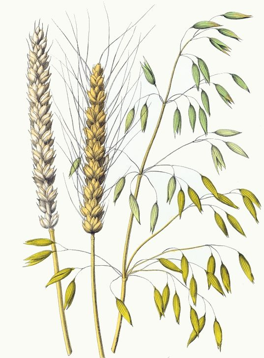
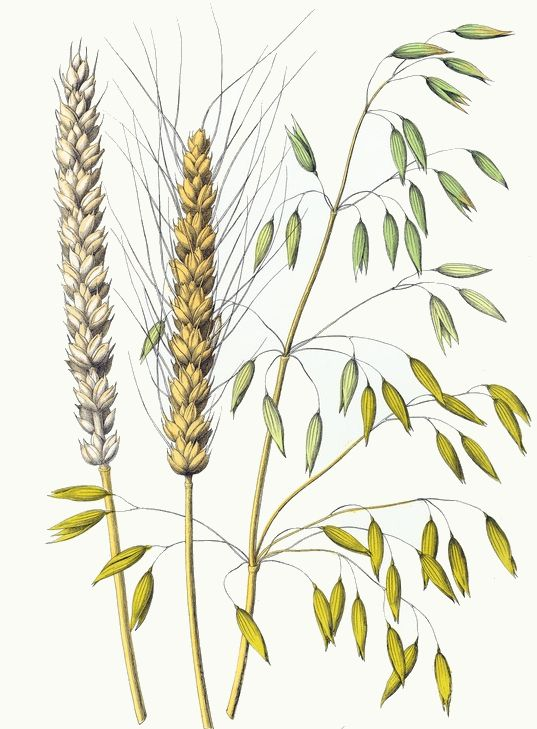

The Arista Project
Reimagining agriculture with bio-based, holistic pesticide innovation. Starting with neem, tea tree, and nature’s own solutions.
The Arista Project is building a smarter, greener future in plant biotech. We're starting with a platform that helps farmers and growers identify safe, effective alternatives to synthetic pesticides using AI-assisted recommendations.
Rooted in scientific evidence. Inspired by ecosystems. Powered by purpose.